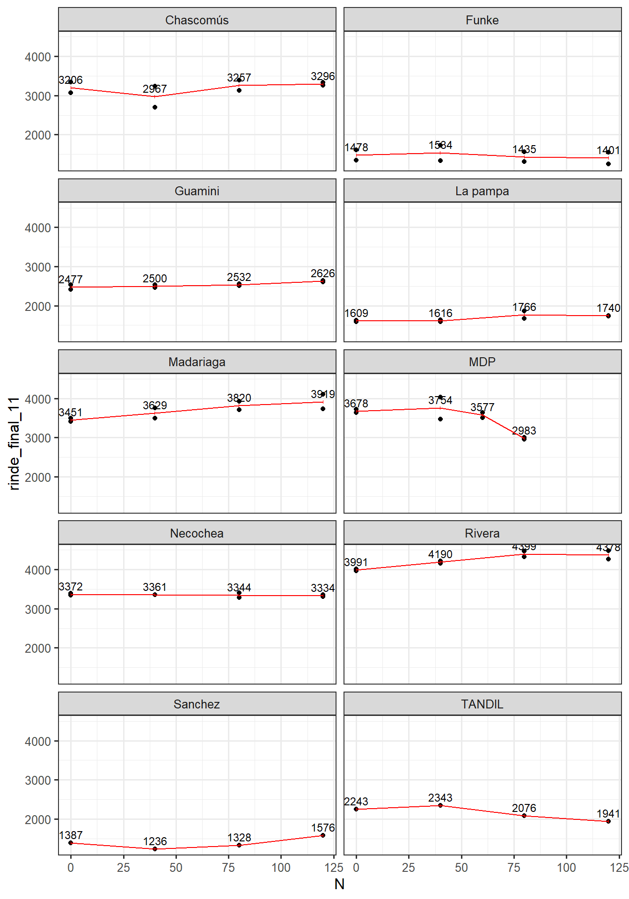
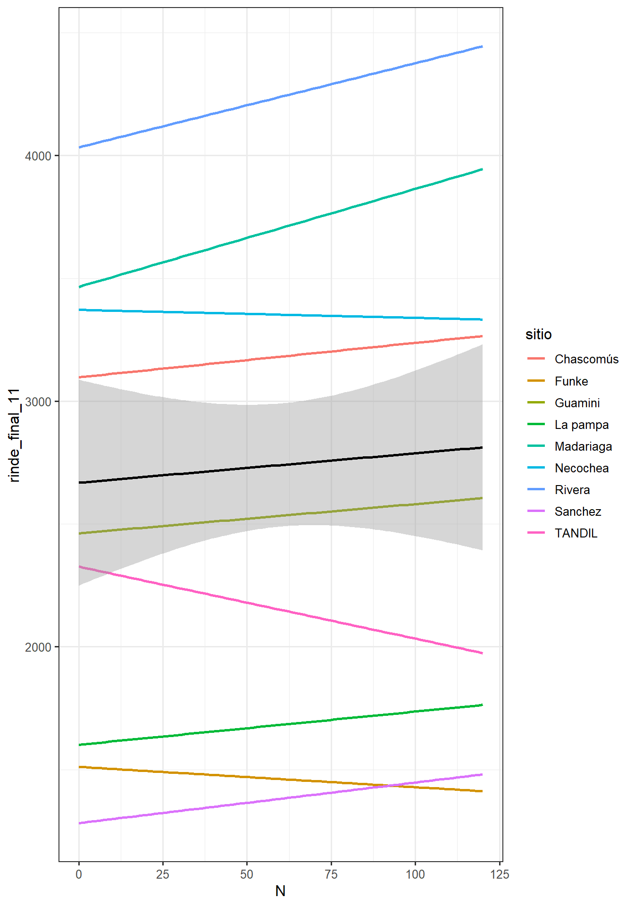
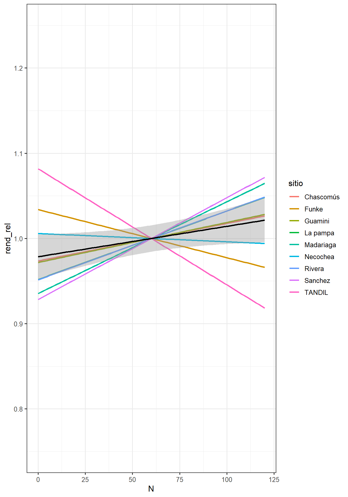
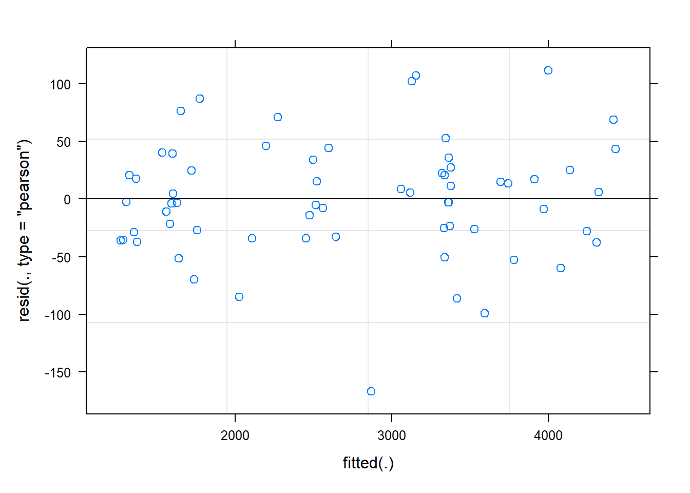

| tratamiento | n |
| 120 kg/ha N | 16 |
| 40 kg/ha N | 18 |
| 60 kg/ha N | 2 |
| 80 kg/ha N | 18 |
| N0 | 18 |
4 Fertilización
Preparando los datos

El sitio “MDP” vuela porque no es consistente con el resto.
Mirando por localidad
| sitio | CV |
| Chascomús | 7.27 |
| Funke | 14.9 |
| Guamini | 2.06 |
| La pampa | 4.34 |
| Madariaga | 4.93 |
| Necochea | 1.39 |
| Rivera | 2.26 |
| Sanchez | NaN |
| TANDIL | NaN |
En general los sitios tuvieron errores experimentales bajos, salvo FUnke pero 15% zafa. Las ultimas dos localidades no tienen repes.-

La linea negra muestra el rendimiento promedio de todos los ambientes. Si uno trabajar con rendimientos relativos seria como descontar el efecto localidad, equivale al modelo global.

4.1 Modelo global

Los residuos bastante bien.
| Sum Sq | Mean Sq | NumDF | DenDF | F value | Pr(>F) |
| 2.99e+04 | 9.97e+03 | 3 | 22.3 | 1.67 | 0.202 |
Segun esto el efecto del tratamiento no es significativo.
| npar | logLik | AIC | LRT | Df | Pr(>Chisq) |
| 8 | -407 | 831 | |||
| 7 | -413 | 839 | 10.3 | 1 | 0.00133 |
| 7 | -417 | 847 | 18.4 | 1 | 1.75e-05 |
| 7 | -419 | 853 | 23.7 | 1 | 1.12e-06 |
La tabla de efectos aleatorios indicaría que la interaccion tratamiento sitio es significativa, explicando la cancelacion del efecto global?
Groups Name Std.Dev.
tratamiento:sitio (Intercept) 114.54
repeticion:sitio (Intercept) 127.25
sitio (Intercept) 1032.05
Residual 77.24 La mayor parte de la variacion debida a sitio.
Los rendimientos promedio en toda la red para estas dosis fueron:
tratamiento emmean SE df lower.CL upper.CL
0 2577 348 8.19 1777 3377
40 2597 348 8.19 1797 3397
80 2667 348 8.19 1867 3467
120 2694 348 8.19 1894 3494
Degrees-of-freedom method: kenward-roger
Confidence level used: 0.95 El amplio IC denota la mayor incertidumbre al considerar el efecto aleatorio de sitio.
Comparando dosis individuales con el control
contrast estimate SE df t.ratio p.value
tratamiento40 - tratamiento0 19.5 60.9 23.9 0.320 0.9584
tratamiento80 - tratamiento0 89.6 60.9 23.9 1.470 0.3472
tratamiento120 - tratamiento0 116.9 60.9 23.9 1.918 0.1664
Degrees-of-freedom method: kenward-roger
P value adjustment: dunnettx method for 3 tests - No hay diferencia
Si vamos al modelo de respuesta:
contrast estimate SE df t.ratio p.value
linear 420.6 192.7 23.9 2.183 0.0391
quadratic 7.8 86.2 23.9 0.091 0.9286
cubic -93.3 192.7 23.9 -0.484 0.6327
Degrees-of-freedom method: kenward-roger Parece indicar que hay un efecto lineal significativo.
| Sum Sq | Mean Sq | NumDF | DenDF | F value | Pr(>F) |
| 3.1e+04 | 3.1e+04 | 1 | 24.2 | 5.18 | 0.0321 |
El modelo global en funcion de la dosis de nitrogeno (considerando la variabilidad de localidades y repeticiones dentro de localidades) es estadisticamente significativo
Linear mixed model fit by REML. t-tests use Satterthwaite's method [
lmerModLmerTest]
Formula: rinde_final_11 ~ N + (1 | N:sitio) + (1 | sitio/repeticion)
Data: filter(ferti, sitio != "MDP")
REML criterion at convergence: 844.1
Scaled residuals:
Min 1Q Median 3Q Max
-2.23486 -0.40702 -0.02281 0.32519 1.46527
Random effects:
Groups Name Variance Std.Dev.
N:sitio (Intercept) 11938 109.26
repeticion:sitio (Intercept) 16187 127.23
sitio (Intercept) 1065427 1032.20
Residual 5986 77.37
Number of obs: 64, groups: N:sitio, 36; repeticion:sitio, 16; sitio, 9
Fixed effects:
Estimate Std. Error df t value Pr(>|t|)
(Intercept) 2570.3413 347.4004 8.1053 7.399 7.13e-05 ***
N 1.0558 0.4641 24.1751 2.275 0.0321 *
---
Signif. codes: 0 '***' 0.001 '**' 0.01 '*' 0.05 '.' 0.1 ' ' 1
Correlation of Fixed Effects:
(Intr)
N -0.0804.1.1 Modelos por localidad
| sitio | pval_trt | pval_N | beta |
| Chascomús | 0.243 | 0.357 | 1.4 |
| Funke | 0.169 | 0.111 | -0.826 |
| Guamini | 0.125 | 0.0146 | 1.19 |
| La pampa | 0.261 | 0.0727 | 1.35 |
| Madariaga | 0.0353 | 0.000898 | 3.99 |
| Necochea | 0.864 | 0.326 | -0.326 |
| Rivera | 0.013 | 0.0044 | 3.43 |
| Sanchez | NaN | 0.408 | 1.65 |
| TANDIL | NaN | 0.149 | -2.93 |
Este analisis muestra que los modelos de anova (más flexibles pero con mas parametros) no muestran respuesta salvo en Rivera donde seguramente hay diferencia entre minimas y máximas.
$emmeans
tratamiento emmean SE df lower.CL upper.CL
0 3991 38.5 3 3868 4113
40 4190 38.5 3 4067 4312
80 4399 38.5 3 4277 4521
120 4378 38.5 3 4256 4500
Results are averaged over the levels of: repeticion
Confidence level used: 0.95
$contrasts
contrast estimate SE df t.ratio p.value
tratamiento0 - tratamiento40 -199 54.4 3 -3.658 0.1012
tratamiento0 - tratamiento80 -408 54.4 3 -7.508 0.0148
tratamiento0 - tratamiento120 -387 54.4 3 -7.123 0.0172
tratamiento40 - tratamiento80 -209 54.4 3 -3.850 0.0893
tratamiento40 - tratamiento120 -188 54.4 3 -3.465 0.1153
tratamiento80 - tratamiento120 21 54.4 3 0.385 0.9773
Results are averaged over the levels of: repeticion
P value adjustment: tukey method for comparing a family of 4 estimates Cuando el modelo se restringe a una funcion lineal, se simplifica, por eso el valor p mejora.
4.2 Conclusion
A nivel global los datos no darían mucha evidencia de un efecto consistente. La mayor parte de la variaciópn se lo lleva la variacion entre sitios (es de esperarse) y la interacción.
Analizando por sitio se encuentran algunas respuestas.